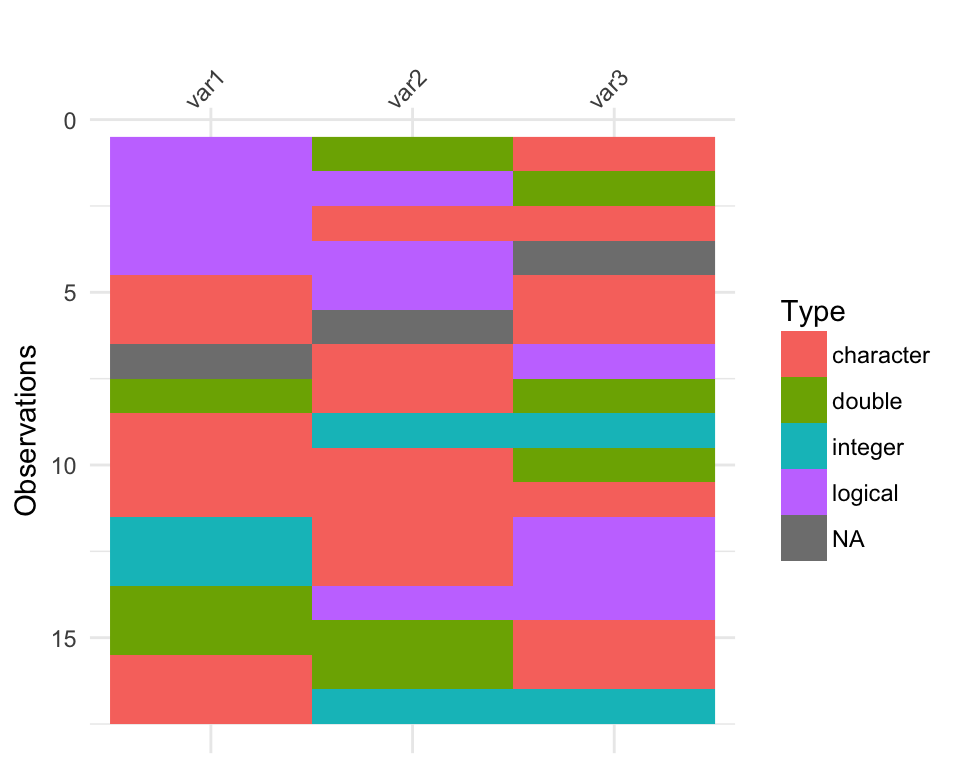
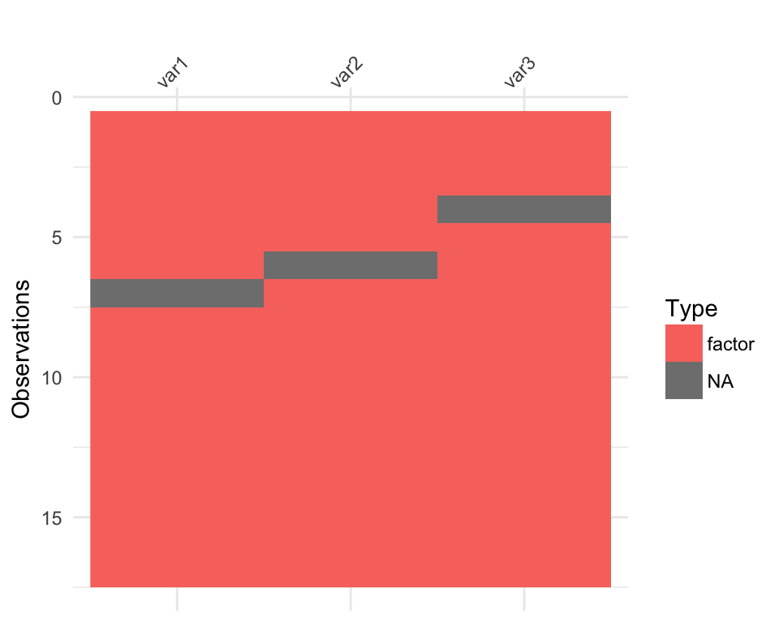
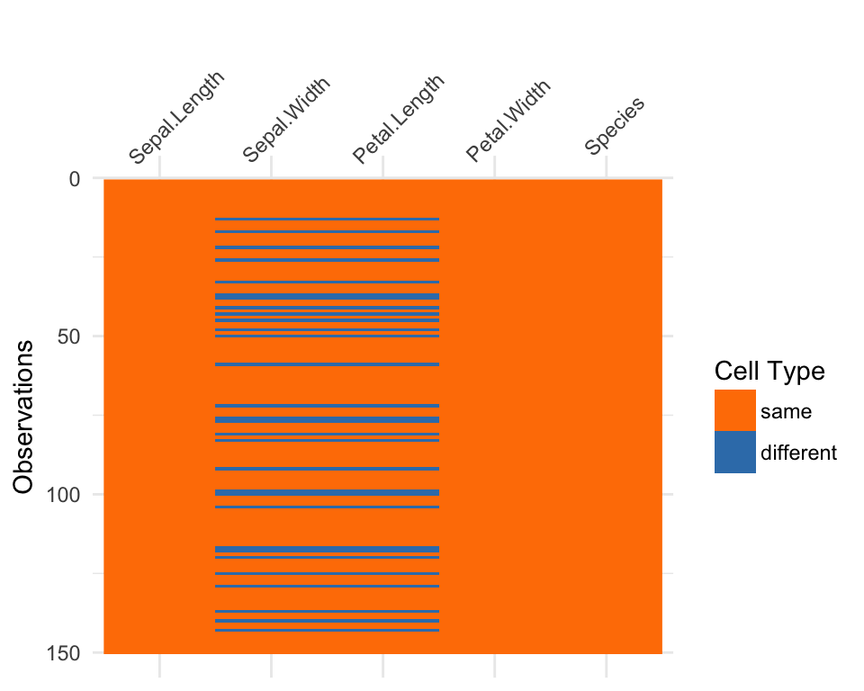

knitr::opts_chunk$set(fig.width = 5,
fig.height = 4)Shipped with visdat are some experimental features that are still a bit temperamental:
vis_guess(),vis_compare()vis_dat_ly(),vis_dat_ly().vis_miss_ly().vis_guess_ly().vis_compare_ly().This vignette describes these features in more detail, along with some of the plans for future work.
vis_guess()
vis_guess() takes a guess at what each cell is. It’s best illustrated using some messy data, which we’ll make here.
messy_vector <- c(TRUE,
T,
"TRUE",
"T",
"01/01/01",
"01/01/2001",
NA,
NaN,
"NA",
"Na",
"na",
"10",
10,
"10.1",
10.1,
"abc",
"$%TG")
set.seed(1114)
messy_df <- data.frame(var1 = messy_vector,
var2 = sample(messy_vector),
var3 = sample(messy_vector))
So here we see that there are many different kinds of data in your dataframe. As an analyst this might be a depressing finding. We can see this comparison above.
Here, you might just assume your data is weird because it’s all factors - or worse, not notice that this is a problem.
At the moment vis_guess is very slow. Please take this into consideration when you are using it on data with more than 1000 rows. We’re looking into ways of making it faster, potentially using methods from the parallel package, or extending the c++ code from readr:::collectorGuess.
vis_compare()
Sometimes you want to see what has changed in your data. vis_compare() helps with that. It is currently only just barely working, so keep in mind that this is very much in its beta stages.
For the sake of simplicity, let’s make some changes to iris, and compare this new dataset.
iris_diff <- iris
iris_diff[sample(1:150, 30),sample(1:4, 2)] <- NA
vis_compare(iris_diff, iris)## vis_compare is in BETA! If you have suggestions or errors
## post an issue at https://github.com/ropensci/visdat/issues
Here the differences are marked in blue.
If you try and compare differences when the dimensions are different, you get an ugly error.
iris_diff_2 <- iris
iris_diff_2$new_col <- iris$Sepal.Length + iris$Sepal.Width
vis_compare(iris, iris_diff_2)
#> vis_compare is still in BETA! If you have suggestions or errors, post an issue at https://github.com/njtierney/visdat/issuesthe condition has length > 1 and only the first element will be usedError: `.x` (5) and `.y` (6) are different lengthsIn the future I’m hoping to create some way of representing the added columns and rows as an additional facet-like part of the plot, perhaps using something from gridExtra.
vis_dat_ly(airquality) is shorthand to call ggplotly(vis_dat(airquality)). When hovering the cursor over a cell, it will display information about each each cell, the type of data, the value, the row number, and the variable.
At the moment the current implementation can be slow, as plotly has to work hard to translate the ggplot calls into plotly.
vis_dat_ly(airquality)vis_miss_ly(airquality) is similar to vis_dat_ly, a shorthand call to ggplotly(vis_miss(airquality)) with one important difference: it is written in pure plotly, so it is very fast!
When hovering the cursor over a cell, it will display information about each each cell, the type of data, the number of missings in that case, and the number of missings in that variable.
vis_miss_ly(airquality)This is again similar to the other vis_*_ly() family calls, requiring
vis_guess_ly(typical_data)Visualising expectations
The idea here is to pass expectations into vis_dat or vis_miss, along the lines of the expectation command in assertr. For example, you could ask vis_dat to identify those cells with values of -1 with something like this:
data %>%
expect(value == -1) %>%
vis_dat()In reality, the mechanics might looks something like this:
airquality %>%
mutate_if(is.numeric, .funs = function(x) x <= 10) %>%
dplyr::mutate(rows = seq_len(nrow(.))) %>%
tidyr::gather_(key_col = "variables",
value_col = "valueType",
gather_cols = names(.)[-length(.)]) %>%
ggplot2::ggplot(ggplot2::aes_string(x = "variables",
y = "rows")) +
ggplot2::geom_raster(ggplot2::aes_string(fill = "valueType")) +
ggplot2::theme_minimal() +
ggplot2::theme(axis.text.x = ggplot2::element_text(angle = 45,
vjust = 1,
hjust = 1)) +
ggplot2::labs(x = "Variables in Dataset",
y = "Observations") +
# ggplot2::scale_x_discrete(limits = type_order_index) +
ggplot2::guides(fill = ggplot2::guide_legend(title = "Expectation"))Where the expectation would get captured and passed to mutate_if, which would need to have a way of dispatching different is. arguments for different classes. E.g., if you wanted to do a search for a character, mutate_if would perform an is.character filter.
Additionally, there will need to be a clever way to pass the expression along to the legend.